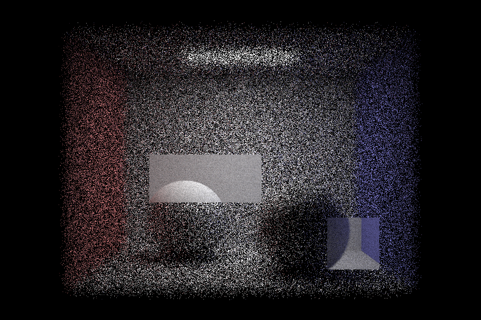
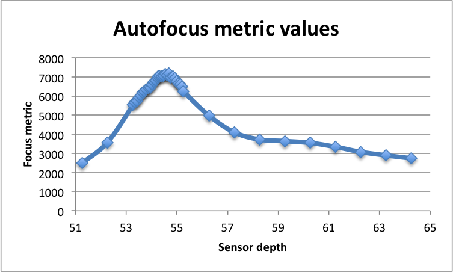
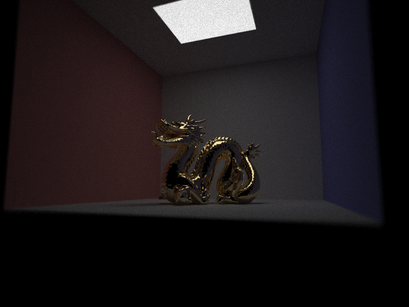

Assignment 4: Lens Simulator
Owen Jow
All right. We have lights. Reflecting on PathTracer, we've traced millions of light rays around millions of Cornell boxes. But where is our camera (and our action)? It's time to augment our path tracer with such things, specifically by adding lenses to the equation. By sticking some lenses in between the scene and the sensor plane (and forcing rays to refract their way through the lenses in order to hit the sensor), we can extend our path tracer to simulate a full camera system. As such, we enable our program to render photorealistic effects like defocus blur and fisheye distortion. Exciting, huh? Let's get started...
Navigation:
1 |
2 |
3 |
4
. . .
Part 1: Tracing Rays through Lenses
As I just mentioned, the difference between our previous assignment's setup (a pinhole camera) and a full-on lens system is that there's now a series of lenses stationed between object space and image space. These lenses serve as a gateway for rays to enter and leave image space; if a ray doesn't pass through the lenses, it doesn't "count." In a pinhole system, meanwhile, rays just pass through a little hole and project onto the sensor plane. There is no focusing mechanism, which really underlines the difference between pinhole and lens cameras.
With lenses, there's a lot more customization potential. Images can be focused onto specific objects in a scene; aperture sizes can be adjusted so that more light passes through and illuminates the picture; lenses can be modeled and modified to create any field of view you please. For example, using a fisheye lens yields an image with an extremely wide, hemispherical view space.
The following is a table that shows (for each of the four lenses) the calculated focal length, infinity focus sensor depth, close focus distance, and close focus sensor depth:
| 1 |
50.358 |
51.2609 |
232.564 |
64.7098 |
| 2 |
22.023 |
28.7632 |
75.675 |
38.4578 |
| 3 |
249.567 |
188.758 |
1543.42 |
241.024 |
| 4 |
9.98933 |
28.7399 |
27.3962 |
42.0427 |
Part 1 Images
|
Forward tracing through D-GAUSS 22° lens
|
|
Backward tracing through D-GAUSS 22° lens
|
|
Forward tracing through Nakamura wide-angle (38°) lens
|
|
Backward tracing through Nakamura wide-angle (38°) lens
|
|
Forward tracing through SIGLER Super achromate telephoto lens
|
|
Backward tracing through SIGLER Super achromate telephoto lens
|
|
Forward tracing through Muller fisheye lens
|
|
Backward tracing through Muller fisheye lens
|
|
A plot of the approximate inverse relationship between sensor depth and conjugate
|
|
Lens #2 world-side conjugates for 100 evenly spaced sensor depths
|
|
Lens #3 world-side conjugates for 100 evenly spaced sensor depths
|
|
Lens #4 world-side conjugates for 100 evenly spaced sensor depths
|
|
Manually focusing on the rear of the image. Lots of defocus blur over the dragon's head!
|
|
A second manually-focused rendition of the Stanford dragon
|
Part 1 Setbacks
| #1 |
I didn't check for radius == 0 in my refract code, meaning that refraction kept failing whenever it hit the aperture (planar element) in the middle of the lens system. |
| #2 |
In LensElement::intersect, I failed to realize that center was a double. Accordingly, while checking for sphere intersection I was subtracting a double from a vector (specifically I was performing r.o - center). For some reason, the Vector3D class allows this to happen without complaint. |
| #3 |
The glass ball in dae/sky/CBspheres.dae was all black, so I thought my BSDF refract function was wrong. In reality, my bounce limit was only 1. |
| #4 |
When calculating near_focus, I copy/pasted the process for calculating infinity_focus and neglected to change t to t2 (in other words, I was using the infinity ray's t value). For this reason, near_focus was always the same as my infinity_focus and I wasn't sure why. |
Part 2: Contrast-based autofocus
Speaking on a high level, our autofocus algorithm works by trying out different sensor depths and selecting the one that yields the most "in focus" image. But how do we figure out which image has the sharpest focus? For this assignment, we use a contrast-based heuristic (henceforce referred to as the focus metric) that analyzes color contrast in order to judge how "in-focus" an image is. A blurrier image ought to have lower contrast (because colors would all be blurred together and would therefore be mostly similar), while a more focused image should have a higher contrast (in that colors would be more distinct and well-defined).
Here, we'll interpret contrast as RGB variance across an image patch. That means we'll find the average red, green, and blue value across whatever image patch we're given (by iterating through the ImageBuffer data members and extracting individual color channels from each of them). Then we'll iterate over the image buffer again, calculating for each data member the squared difference in red, green, and blue from their overall means. We accumulate these values in RGB variance variables. Finally, in order to normalize our heuristic across different image resolutions, we divide by the total number of samples taken and return the sum of red, green, and blue variance. This is used as our focus metric for image patches. Again, the higher the value (aka the higher the variance), the more "in focus" we consider the image to be.
Once we have our heuristic, all that remains is to compute it with different sensor depths and see which depth yields the highest metric value. To do this, we execute a kind of global search for the best sensor depth: specifically, our autofocus algorithm utilizes a coarse-grained search followed by a finer-grained search.
This means that we'll step over sensor depths in increments of 1, calling our focus metric evaluator for the image buffer associated with each depth. At this point, we would have our approximate "in focus" depth – it'd be the depth corresponding to the best metric value seen so far. To execute the fine-grained search, we'd iterate over sensor depths from (that depth minus 1.0) to (that depth plus 1.0) with a step size of 2 * sqrt(36 * 36 + 24 * 24) / sqrt(screenW * screenW + screenH * screenH). [This step value is less than one.] For each of these sensor depths, we would again run our focus metric... and of course track the depth with the best result. As fate would have it, that depth is what we'd call our final, autofocused sensor position. Hooray!
Part 2 Images
|

An autofocused render cell for CBspheres_lambertian.dae
|
|
(A bigger autofocused render cell)
|
|
Stanford dragon with a single autofocused render cell
|
|
Image patches considered in the fine-grained search (centered around a depth of 54.2609 mm)
|
|

Focus metric vs. sensor depth for all depths tested in the autofocus function
|
|
Image patches considered by one run of the autofocus algorithm (unrelated to the previous images)
|
|
High-quality view of the Stanford dragon through the D-GAUSS lens
|
|

High-quality view of the Stanford dragon through the Nakamura wide-angle lens
|
|
High-quality view of the Stanford dragon through the SIGLER telephoto lens
|
|
High-quality view of the Stanford dragon through the Muller fisheye lens
|
|
An "autofocused" coil at 1024 spp
|
Part 2 Setbacks
| #1 |
My BVH really wasn't giving me an acceptable speedup for certain images. To fix this, I had to change my BVH construction function – specifically the case in which all the primitives ended up on one side of the split axis. In my revised implementation, all I do is switch the splitting dimension (naturally to either x, y, or z). To make a long story short, this resulted in a huge speedup and I spent a lifetime feeling bad about all the time I'd wasted. |
| #2 |
In my autofocus search, I wasn't actually changing the sensor depth when I re-raytraced. In other words, I was rendering the same image every time and repeatedly computing exactly the same focus metric. My autofocus algorithm, thus, routinely decided that an atrociously blurry version of each image was the "best." |
Part 3: Faster contrast-based autofocus
As you may have noticed from the "Autofocus metric values" plot earlier, my autofocus search doesn't sample sensor depths with even spacing. It actually spends most of its time checking metrics around [what it perceives as] the global maximum for metrics. This is made possible by the fact that the focus metric increases as we approach the most "in focus" image depth, and then degrades as we move away. (The point is, there IS a global maximum – a spot where the focus is the best.) As I alluded to before, I take advantage of this fact by first running a general search (step size 1) for the best focus metric. Then, once I've found the "general" location of the ideal sensor depth, I run a localized search with a smaller step size (i.e. maximum tolerance for the sensor depth in order to keep the object in focus). This search, in theory, should end up being concentrated around the global maximum, and should be able to discover the "best" focus metric while searching a lot more sparsely within irrelevant depth ranges.
Time-wise, the speedup from this algorithm becomes more and more pronounced as the difference between infinity focus and near focus increases. With a naïve autofocus search, we would be forced to check (near_focus - infinity_focus + 1) / step sensor depths, where step = 2 * sqrt(36 * 36 + 24 * 24) / sqrt(screenW * screenW + screenH * screenH). With the faster autofocus search that was just described, we only have to check (near_focus - infinity_focus + 1) + (2 / step) such depths!
Put another way, every extra millimeter between the near focus and the infinity focus only means one more sensor depth to check... where before it would have meant (1 / step) more sensor depths. [(1 / step) is about 13.3333 on default settings for my computer.] In my opinion, that's a perfectly respectable speedup... especially when the time for each check – as in each focus metric evaluation – is directly proportional to the size of the image buffer.
Acknowledgments
As always, I have a bunch of people (/websites) to thank for helping me learn stuff. This time, my acknowledgments will be organized by the question that they answer:
{kind=link}